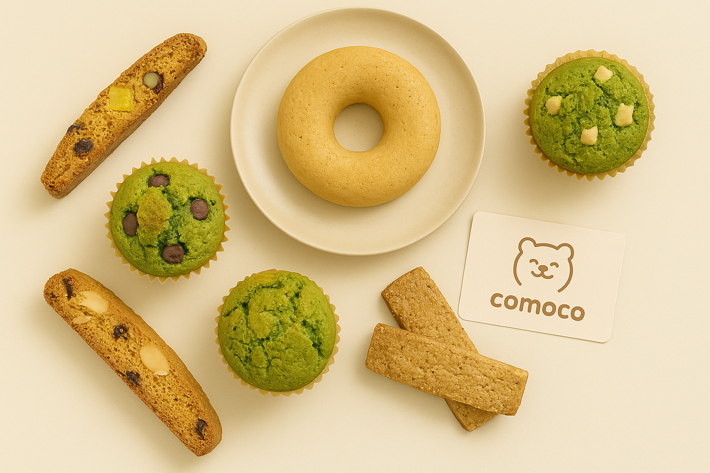

comoco（コモコ）は、家族みんなで楽しめる
「からだ想いのおやつ」を届ける
米粉スイーツブランドです。
小さなお子さまからご年配の方まで、安心して毎日のおやつに選んでいただけるよう、素材選びと製法にこだわっています。
"毎日が少し、やさしくなる"
そんなおやつ時間をお届けしたい。comocoの願いです。

ブランドストーリー
comocoは、創業者の「もっふ」が子育て中に感じた「安心して食べられるおいしいお菓子を作りたい」という想いから始まりました。
初めは自宅キッチンでの小さな挑戦でしたが、家族や友人に好評をいただき、少しずつ活動を広げていきました。「もふもふした温かさ」をブランドの象徴として、心も体も喜ぶおやつ作りを続けています。